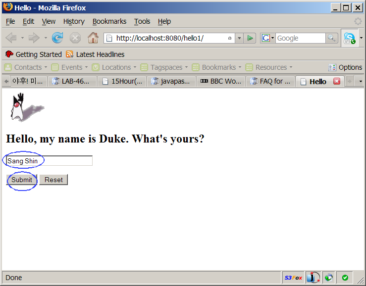
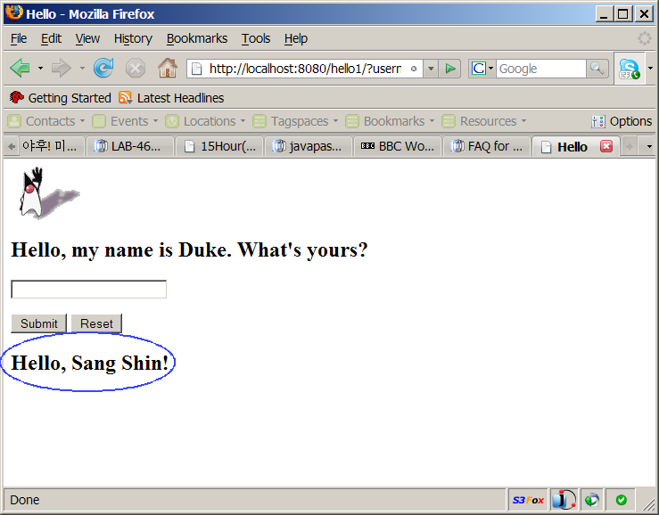
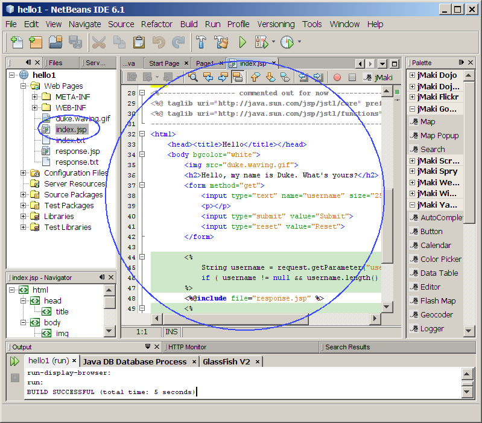
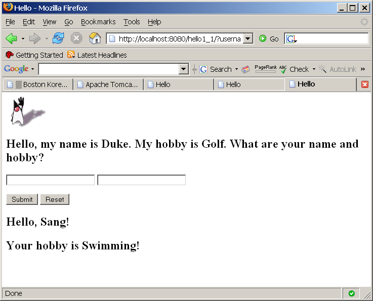

@Copyright notice: This content is
meant to be used only for paying
subscriber's personal
consumption. Sharing with others in any shape or form is
strictly
prohibited
unless a special licensing arrangement has been made with
JPassion.com.
JavaServer Pages (JSP) Basics I
The goal of this hands-on lab is to exercise basic features of JSP,
especially focusing on the features of the JSP 1.2. You are going
to build, run, and modify JSPExamples sample
application using NetBeans.
Expected duration: 70 minutes
(excluding homework)
Resources
Change Log
- Jan. 5th, 2008: Projects now use GlassFish v2 (of NetBeans 6.0)
as deployment platforms
- June 18th, 2008: Updated with NetBeans 6.1
- Aug. 5th, 2009: Tested with NetBeans 6.7.1
- Feb. 21st, 2010: Tested with NetBeans 6.8, JSPExamples is
provided as part of the hands-on lab zip file (Sang Shin)
- Oct. 13th, 2011: Separated out into jsp_basics1 and jsp_basics2,
homework is modified (Sang Shin)
- July 20th, 2012: Sample projects are provided as Maven projects
Lab Exercises
Exercise 1: Build and run HelloWorld JSP
Application I ("jsp_hello1")
In this exercise, you are going to create
a simple HelloWorld JSP application whose NetBeans project name is
set as "jsp_hello1".
(1.1)
Open, build, and run "jsp_hello1" sample application
0. Start Maven-aware IDE.
1. Open jsp_hello1 Maven project.
- Select File->Open Project (Ctrl+Shift+O). The Open Project dialog box appears.
- Browse down to <LAB_UNZIPPED_DIRECTORY>/jsp_basics1/samples_maven
directory.
- Windows: If you unzipped the 4003_jsp_basics1.zip
file under
C:\
directory, the directory to which you want
to browse down should be C:\jsp_basics1\samples_maven.
- Solaris/Linux: If you unzipped the 4003_jsp_basics1.zip
file under $HOME
directory, the directory to which you want
to browse down should be $HOME/jsp_basics1/samples_maven.
- Select jsp_hello1.
- Click Open Project.
The jsp_hello1
project node appears under Projects tab
window.
2 Build and run jsp_hello1 project.
- Right-click jsp_hello1
project and select Run.
- Browser gets displayed. Type your name in the input form
field and click Submit button.

- Observe that Hello, <Your
name> is displayed.

Figure-1.12: Running jsp_hello1 project
return to top of the exercise
(1.2)
Modify the application to display "hobby"
In this step, you are going to modify
the jsp_hello1 application to
ask
a hobby of a user and then redisplay it.
1. Double click
index.jsp under
jsp_hello1->Web Pages
to open in the source editor.

2. Modify
index.jsp as
shown in Code-1.13 below.
<%------------------
commented out for now ---------------------------
<%@ taglib uri="http://java.sun.com/jsp/jstl/core" prefix="c" %>
<%@ taglib uri="http://java.sun.com/jsp/jstl/functions" prefix="fn"
%>
---------------------------------------------------------------------%>
<html>
<head><title>Hello</title></head>
<body bgcolor="white">
<img
src="duke.waving.gif">
<h2>Hello, my name is
Duke. My hobby is Golf. What are your name and hobby?</h2>
<form method="get">
<input type="text" name="username" size="25">
<input
type="text" name="hobby" size="25">
<p></p>
<input type="submit" value="Submit">
<input type="reset" value="Reset">
</form>
<%
String username = request.getParameter("username");
if (
username != null && username.length() > 0 ) {
%>
<%@include
file="response.jsp" %>
<%
}
%>
<%------------ commented
out for now ------------
<c:if
test="${fn:length(param.username) > 0}" >
<%@include file="response.jsp" %>
</c:if>
-------------------------------------------------%>
</body>
</html>
|
Code-1.13: Modified index.jsp
3. Modify
response.jsp under
jsp_hello1->Web Pages as shown in
Code-1.14 below.
<h2><font
color="black">Hello, ${param.username}!</font></h2>
<h2><font
color="black">Your hobby is ${param.hobby}!</font></h2>
|
Code-1.14: Modified ResponseServlet.java
4. Right-click
jsp_hello1
project and select
Run.
5. Type in a name and hobby into the blank fields. Clock
Submit button.
6. Observe the name and hobby you typed are displayed. (Figure-1.15
below)

Figure-1.15: Result of running the application
return to top of the exercise
Summary
In this exercise, you have built
and run a simplest possible Web application that contains two JSP
files, index.jsp and response.jsp.
return to the top
Exercise 2: Build and run HelloWorld JSP
Application II ("jsp_hello2")
In this exercise, you are going to see a
modified version of the "jsp_hello1" application above using JSTL tag
library (We have not learned JSTL yet so this is just a teaser.)
(2.1)
Open, build, and run "jsp_hello2" sample application
0. Start Maven-aware IDE.
1. Open jsp_hello2 Maven project.
2 Build and run jsp_hello2 project.
- Browser gets displayed. Type your name in the input form
field and click Submit button.
- Observe that Hello, <Your
name> is displayed.
Figure-2.12: Running jsp_hello2 project
return to top of the exercise
(2.2)
Modify the application to display "hobby"
In this step, you are going to modify
the jsp_hello2 application to
ask
a hobby of a user and then redisplay it.
1. Double click
index.jsp under
jsp_hello2->Web Pages
to open in the source editor.
<%@
taglib uri="http://java.sun.com/jsp/jstl/core" prefix="c" %>
<%@ taglib
uri="http://java.sun.com/jsp/jstl/functions" prefix="fn" %>
<html>
<head><title>Hello</title></head>
<body bgcolor="white">
<img
src="duke.waving.gif">
<h2>Hello, my name is
Duke. What's yours?</h2>
<form method="get">
<input type="text" name="username" size="25">
<p></p>
<input type="submit" value="Submit">
<input type="reset" value="Reset">
</form>
<c:if test="${fn:length(param.username)
> 0}" >
<%@include file="response.jsp" %>
</c:if>
</body>
</html>
|
2. Modify
index.jsp as
shown in Code-2.13 below.
<%@ taglib
uri="http://java.sun.com/jsp/jstl/core" prefix="c" %>
<%@ taglib uri="http://java.sun.com/jsp/jstl/functions" prefix="fn"
%>
<html>
<head><title>Hello</title></head>
<body bgcolor="white">
<img
src="duke.waving.gif">
<h2>Hello, my name
is Duke. My hobby is Golf. What are your name and hobby?</h2>
<form method="get">
<input type="text" name="username" size="25">
<input
type="text" name="hobby" size="25">
<p></p>
<input type="submit" value="Submit">
<input type="reset" value="Reset">
</form>
<c:if
test="${fn:length(param.username) > 0}" >
<%@include file="response.jsp" %>
</c:if>
</body>
</html>
|
Code-2.13: Modified index.jsp
3. Modify
response.jsp under
jsp_hello2->Web Pages as shown in
Code-1.14 below.
<h2><font
color="black">Hello, ${param.username}!</font></h2>
<h2><font
color="black">Your hobby is ${param.hobby}!</font></h2>
|
Code-1.14: Modified ResponseServlet.java
4. Right-click
jsp_hello2
project and select
Run.
5. Type in a name and hobby into the blank fields. Clock
Submit button.
6. Observe the name and hobby you typed are displayed. (Figure-2.15
below)
Figure-2.15: Result of running the application
return to top of the exercise
Summary
In this exercise, you have built
and run a simplest possible Web application that contains two JSP
files, index.jsp and response.jsp.
return to the top
Homework Exercise
1.
The homework is to modify the jsp_hello1 project as described below. (You
might want to create a new project by copying
the jsp_hello1
project. You can name
the
homework project in any way you want
but here I am going to call it Myjsp_hello1.)
- Modify index.jsp and response.jsp to ask and
display another
item such as Birth Place or Nationality.
- The index.jsp
includes another JSP file called middle.jsp.
(So index.jsp includes both middle.jsp and response.jsp) The middle.jsp
displays the current date and time.
2
. Send the following files to
j2eehomeworks@javapassion.com
with Subject
as jsp_basics1.
- Zip file of the Myjsp_hello1 Maven project.
- Captured output screen -
name it as jsp_basics1.gif
or jsp_basics1.jpg (or jsp_basics1.<whatever
graphics format>)
- Any screen capture that shows that your program is working is
good enough.